India stands at the precipice of economic transformation, with its ambition to become a $10 trillion economy by 2030 intrinsically linked to a technology most people never consider: batteries. The correlation is profound and urgent—nearly 80% of India's oil and half its natural gas come from abroad, making energy independence not merely an economic imperative but a strategic necessity. As trade tensions around global energy supply persist, India faces a critical choice: either continue importing energy at escalating costs or build a homegrown lithium-ion ecosystem that captures the value of tomorrow's battery revolution.
The Strategic Imperative: Energy Independence Through Domestic Battery Manufacturing
India's energy vulnerability exposes both economic weakness and opportunity. Current import costs for fully built battery packs range from $1 to $1.5 billion annually, a figure that threatens to balloon to $15 billion without domestic localization. This represents not just an opportunity cost but a strategic liability. By contrast, a 400 GWh cell manufacturing industry can create nearly $80 billion in market capitalization—roughly equivalent to India's entire listed auto ancillaries' sector today. Building a domestic battery ecosystem is therefore not a peripheral industrial policy choice but a foundational component of India's economic architecture.
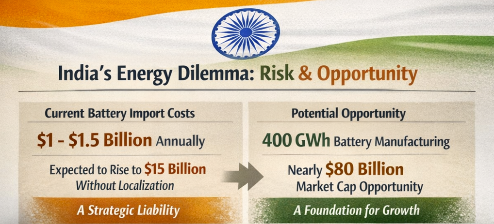
The precedent is instructive. India's solar sector provides a compelling blueprint. In 2018, China controlled 95% of global solar processing while India had only 3 GW of domestic module capacity. Through targeted policy interventions—Basic Customs Duty, Approved List of Models and Manufacturers (ALMM), and Production Linked Incentive (PLI) schemes—India has achieved remarkable scale.
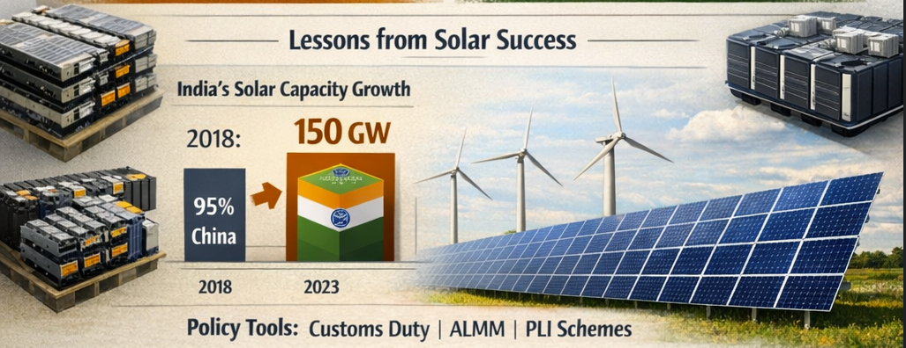
Today, India is positioned to reach 150 GW of module capacity and 75 GW of cell capacity, creating a $3 billion annual profit pool and $15 billion in new market capitalization in just five years. This same playbook is now being applied to batteries, with India targeting 130 GWh of domestic cell capacity by 2030—requiring $12-14 billion in capex across the supply chain.
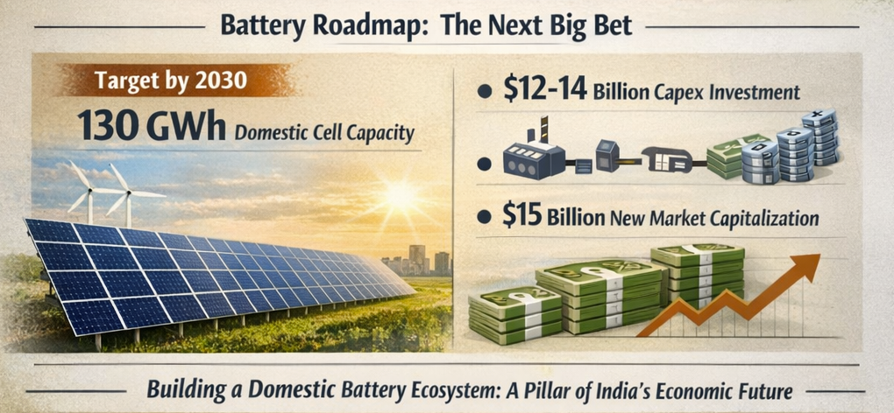
Two Engines of Battery Demand: Electric Mobility and Grid Storage
Battery demand in India is being driven simultaneously by two powerful and complementary trends: the electrification of transportation and the imperative for grid-scale energy storage.
Electric Vehicles and Transportation Electrification
India's electric vehicle adoption varies dramatically by segment, reflecting different market maturity levels and economic dynamics. Two-wheelers are leading the charge, with EV scooters already comprising 37% of total two-wheeler sales and potentially reaching one-third to half of the market by 2030. Four-wheelers remain in earlier stages, with penetration at 3-5% today but anticipated to reach at least 20% by 2030, driven by supply expansion and urban use cases—though this growth is heavily contingent on charging infrastructure rollout.
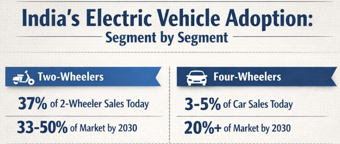
What deserves particular attention is India's unexpected global leadership in electric buses. Nearly all new state transport tenders are now electric, with adoption rising across public and private segments. Three-wheelers have already established India as a global leader in this category, while commercial trucks (LCVs and HCVs) are showing early green shoots of market development.
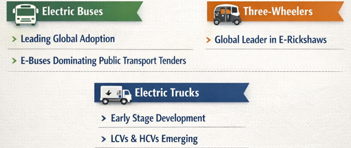
Aggregating across all mobility segments, India will require more than 100 GWh of lithium-ion cells annually by 2030, with the inclusion of stationary storage potentially pushing this figure to 130-150 GWh.
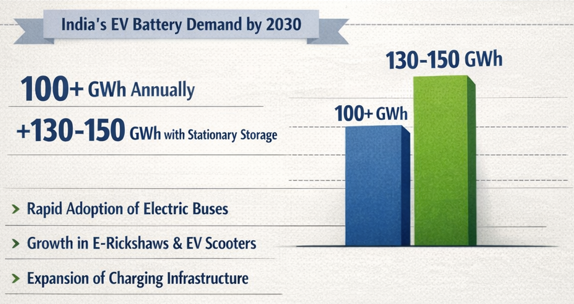
Grid-Scale Battery Energy Storage: A New Necessity
The expansion of renewable energy has moved grid-scale battery storage from theoretical necessity to operational imperative. As India advances toward its 500 GW non-fossil fuel capacity target by 2030, the integration of variable renewable sources introduces significant intermittency challenges that only storage can resolve.
A critical rule of thumb governs the relationship between renewable generation and storage requirements: for every gigawatt of solar and wind added to the grid, approximately one gigawatt-hour of storage is needed. Applying this metric to India's 500 GW renewable target indicates a requirement for 250-300 GWh of storage capacity by 2032. The momentum is already visible. More than 60 GWh of storage tenders have been announced in the last 18 months, with 10 GWh already under construction.
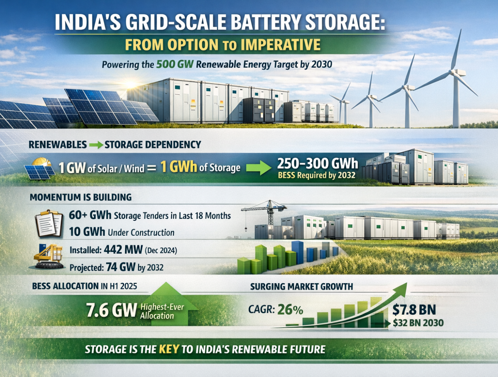
India's installed BESS capacity reached 442 megawatts as of December 2024 and is projected to reach 74 gigawatts by 2032. In the first half of 2025 alone, 7.6 GW was allocated to developers, marking India's highest BESS allocation to date. The market itself is expanding at a compound annual growth rate of 26%, with valuation projected to climb from $7.8 billion in 2024 to $32 billion by 2030.
Understanding the Battery Supply Chain: Where India Can Build Competitive Advantage
The lithium-ion battery supply chain is architecturally complex, with value concentrated in specific upstream and midstream layers rather than distributed across the chain. Understanding this structure is essential for identifying where India can build defensible competitive advantages.
A lithium-ion battery comprises five critical layers: cathode, anode, separator, electrolyte, and casing. The cathode is the most value-dense component, contributing 25-40% of total cell cost, while the anode adds another 10-15%. These components drive both performance characteristics and chemistry decisions, anchoring the economics of the entire value chain.
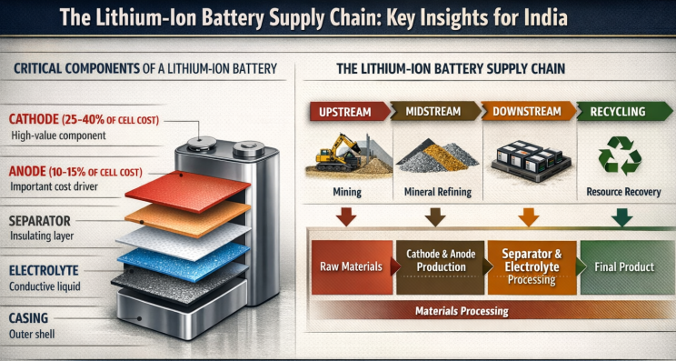
The supply chain flows from upstream mining and mineral refining through midstream materials processing to downstream cell manufacturing and pack assembly. This final stage feeds into recycling, which in a mature circular economy becomes essential for mineral security and cost stability.
The Strategic Focus: Midstream Materials as India's Competitive Moat
Cell manufacturing operates with razor-thin margins, while pack assembly competes on even lower economics. Midstream materials processing—cathode, anode, electrolyte, and separators—offers pricing power, technological differentiation, and substantially superior profitability. Industry estimates suggest the midstream segment can generate approximately $1 billion in annual profit pools, translating to roughly $20 billion in market capitalization creation on a $4 billion capex base.
This represents India's strategic opportunity. Rather than attempting to compete globally in low-margin cell manufacturing against entrenched Chinese producers, India should concentrate on building world-class capabilities in critical materials processing. This approach leverages existing industrial strengths, requires less capital per unit of value created, and builds the domestic supply resilience upon which large-scale cell and pack manufacturing ultimately depends.
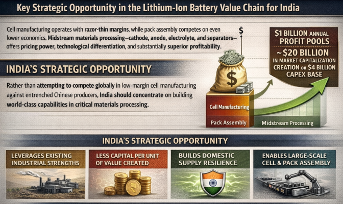
India's Policy Framework: Learning from China, Adapting for India
China's rise in battery manufacturing was not organic but deliberately engineered through coordinated policy. The government recognized two fundamental realities: China's dependence on imported energy and the impossibility of catching up with global OEMs in internal combustion technology. This recognition led to a decisive bet on electric vehicles that included incentives for local battery companies, a whitelist ensuring EV subsidies applied only to vehicles using domestically produced batteries, and scale-driven competition to reduce costs—all supporting tight alliances between OEMs and battery manufacturers.
India is beginning to implement analogous policies, though gaps remain. Current initiatives include:
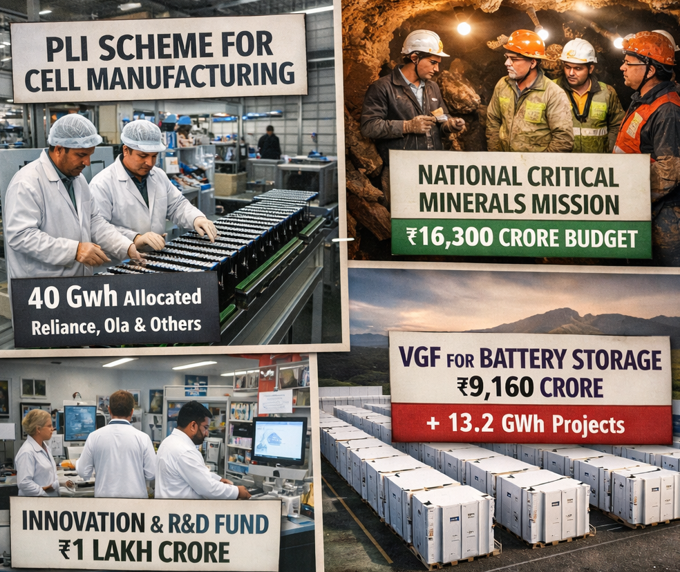
Production Linked Incentive (PLI) scheme for cell manufacturing, which has allocated 40 GWh of capacity to Reliance, Ola, and others
National Critical Minerals Mission, funded with a 16,300 crore budget
Innovation and R&D Fund of 1 lakh crore for sunrise sectors
Viability Gap Funding (VGF) for Battery Energy Storage Systems, with ₹9,160 crore allocation, supporting 13.2 GWh of projects already under implementation and an additional ₹5,400 crore planned to support 30 GWh of additional capacity
Despite these initiatives, a critical gap remains: Basic Customs Duty protection on battery materials and cells. Solar manufacturing grew substantially only after India implemented 40% duty on modules and 25% duty on cells. Battery cells require similar protection—estimated at 25-30% for cell assembly—to achieve domestic manufacturing viability in the near term.
Emerging Battery Technologies and India's Diverse Supply Chain Strategy
While lithium-ion batteries dominate current battery demand, emerging alternative chemistries offer strategic opportunities aligned with India's unique resource base and manufacturing capabilities.
Zinc-Based Batteries: Harnessing Domestic Resources
Zinc-based batteries represent a transformative opportunity for India, which is the world's largest integrated zinc producer. These batteries offer inherent advantages: they are non-flammable, non-toxic, fully recyclable, with potential lifespans up to 20 years. Their lower raw material costs, combined with intrinsic safety advantages and environmental benefits, position them as viable alternatives for grid-scale storage, renewable integration, and off-grid applications.
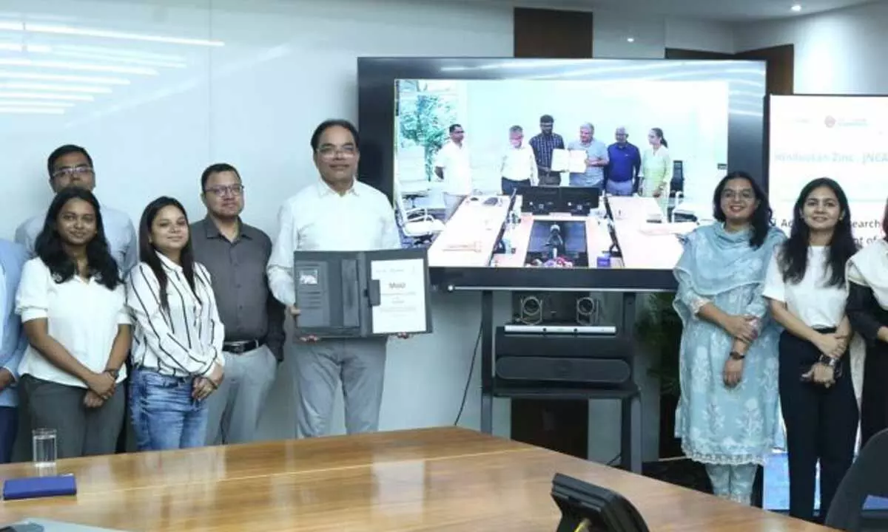
India's ecosystem for zinc battery innovation is strengthening. Partnerships between industry leaders (such as Hindustan Zinc) and institutions like IIT Madras and JNCASR Bangalore are advancing next-generation zinc batteries optimized for durability, affordability, and scalability. International collaborations—including partnerships with US-based companies on nickel-zinc solutions for defense, aerospace, and renewable energy—signal momentum.
Sodium-ion and Long-Duration Technologies
China has actively deployed sodium-ion batteries, leveraging abundant domestic raw material reserves. India possesses similarly abundant sodium reserves, making sodium-ion technology a cost-effective pathway to reduce dependence on lithium and improve energy storage affordability. California's proven reliance on flow batteries for long-duration, lower-cost storage offers another strategic avenue. If India strategically incentivizes R&D in these areas, it could establish competitive alternatives to lithium-ion while reducing mineral import vulnerability.
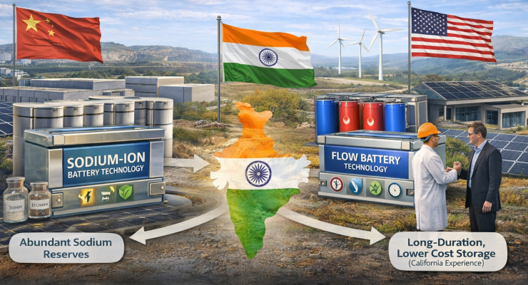
Solid-State Batteries: The Next Frontier
Solid-state batteries represent the advanced frontier of battery technology. These employ solid electrolytes instead of liquid or polymer gels, offering higher energy density, enhanced safety (eliminating flammable liquid components), smaller volume requirements, and faster charging potential. However, production costs remain prohibitively high at the present stage, with technical challenges including dendrite formation and interfacial resistance requiring resolution. The timeline for commercial deployment is estimated at 10-20 years.
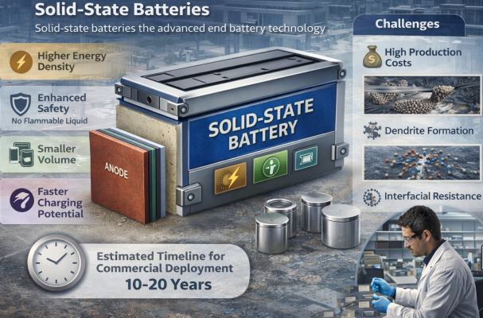
The Circular Economy Imperative: Recycling as Resource Security
India's battery waste streams will reach millions of tonnes annually by 2030. Rather than treating this as a disposal problem, India must recognize it as a resource opportunity. Circular battery recycling creates a domestic supply loop for critical minerals while reducing import dependence and exposure to volatile international prices.
Recovery of high-purity lithium, cobalt, nickel, manganese, and graphite from used batteries and production scrap can be refined into battery-grade inputs, creating a self-contained circular flow. This approach accomplishes multiple strategic objectives simultaneously: reducing import dependence, stabilizing prices for cell manufacturers through long-term supply predictability, lowering environmental footprints, and building mineral security buffers against global supply chain disruptions.
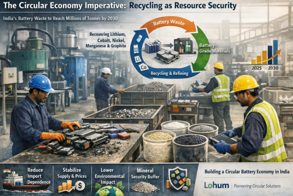
Companies like Lohum are pioneering circular models that will become essential as India's battery manufacturing scales. No country can build large-scale cell manufacturing without assured access to raw materials, making circular supply the most reliable buffer against global supply chain instability.
Key Players Shaping India's Battery Ecosystem
India's battery supply chain is being built by a diverse set of companies operating across different nodes:
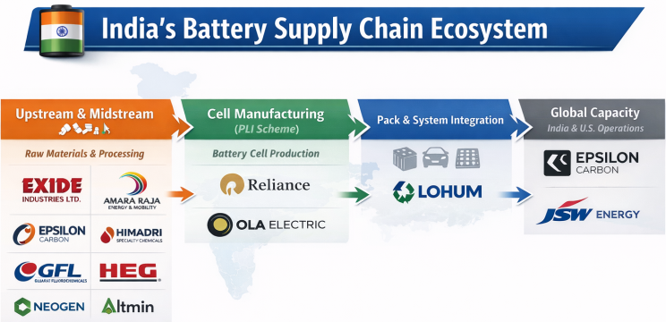
Upstream and Midstream Players: Exide Industries Limited , Amara Raja Energy & Mobility Ltd , Epsilon Carbon Pvt. Ltd. , Himadri Chemicals , Gujarat Fluorochemicals Limited , HEG limited , Neogen Corporation , and Altmin are establishing capacities across refining, materials processing, and component manufacturing. HEG's expansion into battery-grade and spherical graphite is particularly strategic, building on decades of graphite electrode manufacturing expertise to establish upstream domestic strength.
Cell Manufacturing: Reliance Industries Limited , Ola Electric , JSW Energy Ltd , and others are ramping capacity under PLI scheme allocations.
Circular Economy: LOHUM is pioneering battery recycling and recovery of critical minerals from scrap and end-of-life batteries.
Some companies, notably Epsilon Carbon Pvt. Ltd. and Gujarat Fluorochemicals Limited , are establishing capacity in the United States as well, signaling confidence in diversified geographies while supporting India's domestic supply chain.
The Market Size: Capturing Domestic Value at Scale
The magnitude of opportunity is substantial. India's battery market, encompassing both electric vehicles and stationary storage, will grow from current levels to approximately 150 GWh of annual demand by 2030. The global battery market itself is expanding from 1,500 GWh to 4,500 GWh over the same period, placing India's proportional demand at 3.3% of global consumption—a massive market for a single country.
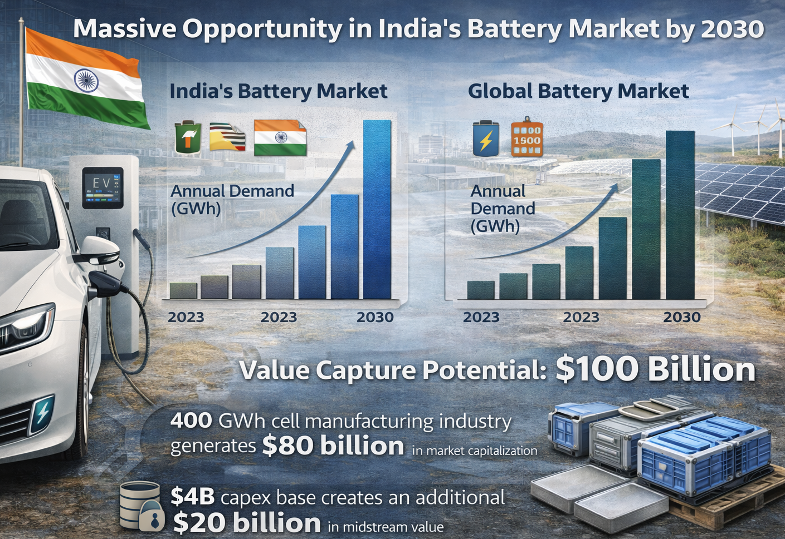
The value capture potential is equally impressive. Industry estimates suggest that successful execution of India's battery manufacturing strategy could generate $80 billion in market capitalization for a 400 GWh domestic cell manufacturing industry, with midstream materials businesses potentially creating an additional $20 billion in value on a $4 billion capex base.
Conclusion: Batteries as the Foundation of Economic Independence
India's path to a $10 trillion economy is paved with batteries. This is neither metaphorical nor hyperbolic. The convergence of transportation electrification and grid-scale energy storage creates a decade-long investment super-cycle of unprecedented scale. The opportunity for India lies not in building a generic battery manufacturing ecosystem, but in strategically establishing competitive advantages in high-value midstream materials processing, circular mineral recovery, and emerging battery chemistries that leverage India's unique resource endowments.